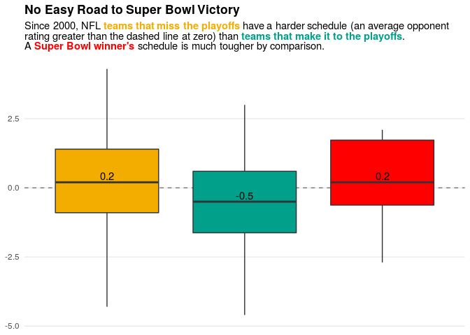
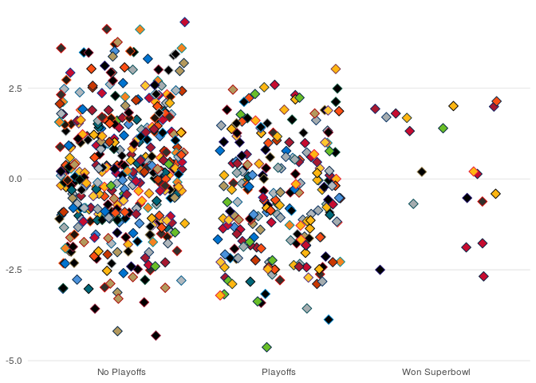
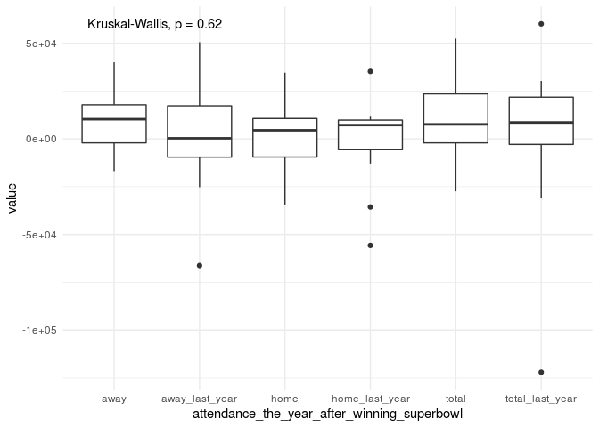

Tidy Tuesday: NFL Stadium Attendance
Dip into the new ggttext package to get some rich text formatting in a plot’s title. Also: sports.
- Load in data
- The question: to super bowl winners have harder schedules?
- Summarize data
- Test the difference in schedule strength
- Plot
- Bonus: Color by Team Name
- Bonus: What is the bump in attendance the year after winning a superbowl?
Load in data
attendance <- read_csv('https://raw.githubusercontent.com/rfordatascience/tidytuesday/master/data/2020/2020-02-04/attendance.csv',
col_types = cols())
glimpse(attendance)
## Observations: 10,846
## Variables: 8
## $ team <chr> "Arizona", "Arizona", "Arizona", "Arizona", "Arizon…
## $ team_name <chr> "Cardinals", "Cardinals", "Cardinals", "Cardinals",…
## $ year <dbl> 2000, 2000, 2000, 2000, 2000, 2000, 2000, 2000, 200…
## $ total <dbl> 893926, 893926, 893926, 893926, 893926, 893926, 893…
## $ home <dbl> 387475, 387475, 387475, 387475, 387475, 387475, 387…
## $ away <dbl> 506451, 506451, 506451, 506451, 506451, 506451, 506…
## $ week <dbl> 1, 2, 3, 4, 5, 6, 7, 8, 9, 10, 11, 12, 13, 14, 15, …
## $ weekly_attendance <dbl> 77434, 66009, NA, 71801, 66985, 44296, 38293, 62981…
standings <- read_csv('https://raw.githubusercontent.com/rfordatascience/tidytuesday/master/data/2020/2020-02-04/standings.csv',
col_types = cols())
glimpse(standings)
## Observations: 638
## Variables: 15
## $ team <chr> "Miami", "Indianapolis", "New York", "Buffalo", …
## $ team_name <chr> "Dolphins", "Colts", "Jets", "Bills", "Patriots"…
## $ year <dbl> 2000, 2000, 2000, 2000, 2000, 2000, 2000, 2000, …
## $ wins <dbl> 11, 10, 9, 8, 5, 13, 12, 9, 7, 4, 3, 12, 11, 7, …
## $ loss <dbl> 5, 6, 7, 8, 11, 3, 4, 7, 9, 12, 13, 4, 5, 9, 10,…
## $ points_for <dbl> 323, 429, 321, 315, 276, 346, 333, 321, 367, 185…
## $ points_against <dbl> 226, 326, 321, 350, 338, 191, 165, 255, 327, 359…
## $ points_differential <dbl> 97, 103, 0, -35, -62, 155, 168, 66, 40, -174, -2…
## $ margin_of_victory <dbl> 6.1, 6.4, 0.0, -2.2, -3.9, 9.7, 10.5, 4.1, 2.5, …
## $ strength_of_schedule <dbl> 1.0, 1.5, 3.5, 2.2, 1.4, -1.3, -2.5, -0.2, -1.4,…
## $ simple_rating <dbl> 7.1, 7.9, 3.5, 0.0, -2.5, 8.3, 8.0, 3.9, 1.1, -1…
## $ offensive_ranking <dbl> 0.0, 7.1, 1.4, 0.5, -2.7, 1.5, 0.0, 0.6, 3.2, -8…
## $ defensive_ranking <dbl> 7.1, 0.8, 2.2, -0.5, 0.2, 6.8, 8.0, 3.3, -2.1, -…
## $ playoffs <chr> "Playoffs", "Playoffs", "No Playoffs", "No Playo…
## $ sb_winner <chr> "No Superbowl", "No Superbowl", "No Superbowl", …
The question: to super bowl winners have harder schedules?
I am curious if teams that win the super bowl have an easier or harder schedule than the other teams that make it to the playoffs. The strength_of_schedule variable provides a simple way to test this.
The only data manipulation we need to do is combine playoffs and sb_winner:
standings <- standings %>%
mutate(final_position = if_else(sb_winner == "Won Superbowl", sb_winner, playoffs))
Summarize data
standing_summary <- standings %>%
group_by(final_position) %>%
summarize(less_zero = sum(strength_of_schedule < 0),
total = n(),
percent_less_zero = less_zero / total,
median_strength = median(strength_of_schedule)
)
standing_summary
## # A tibble: 3 x 5
## final_position less_zero total percent_less_zero median_strength
## <chr> <int> <int> <dbl> <dbl>
## 1 No Playoffs 170 398 0.427 0.2
## 2 Playoffs 132 220 0.6 -0.5
## 3 Won Superbowl 8 20 0.4 0.2
It looks like most teams that make it to the playoffs have an easier schedule (60% of them hace an average opponent rating less than zero) than those that win the super bowl (only 40% have average opponent rating less than zero). Teams that don’t make the playoffs also seem to have more difficult schedule.
Test the difference in schedule strength
The Kruskal-Wallis is suitable for multiple rank-based comparisons of groups:
standings %>%
kruskal.test(strength_of_schedule ~ final_position, data = .)
##
## Kruskal-Wallis rank sum test
##
## data: strength_of_schedule by final_position
## Kruskal-Wallis chi-squared = 27.31, df = 2, p-value = 1.174e-06
But sometimes, doing pairwise Wilcox tests can be more interpretable.
standings %>%
filter(final_position != "Won Superbowl") %>%
wilcox.test(strength_of_schedule ~ final_position, data = .)
##
## Wilcoxon rank sum test with continuity correction
##
## data: strength_of_schedule by final_position
## W = 54732, p-value = 2.549e-07
## alternative hypothesis: true location shift is not equal to 0
standings %>%
filter(final_position != "No Playoffs") %>%
wilcox.test(strength_of_schedule ~ final_position, data = .)
##
## Wilcoxon rank sum test with continuity correction
##
## data: strength_of_schedule by final_position
## W = 1599, p-value = 0.04333
## alternative hypothesis: true location shift is not equal to 0
Plot
Manually specify some colors (taken from the fun wesanderson package)
final_position_pal = c(
"No Playoffs" = "#F2AD00",
"Playoffs" = "#00A08A",
"Won Superbowl" = "#FF0000"
)
We will use the features of the great new ggtext package to color text in the subtitle of the plot, obviating the need for a figure legend.
library(ggtext)
standings %>%
ggplot(aes(x = final_position, y = strength_of_schedule, fill = final_position)) +
geom_hline(yintercept = 0, lwd = 0.5, lty = 2, color = 'grey 50') +
geom_boxplot() +
#geom_jitter(width = 0.25) +
geom_text(data = standing_summary,
inherit.aes = FALSE,
nudge_y = 0.22,
mapping = aes(x = final_position, y = median_strength, label = median_strength)) +
scale_fill_manual(values = final_position_pal,
guide = 'none'
) +
theme_minimal() +
theme(axis.title = element_blank(),
axis.text.x = element_blank(),
panel.grid.minor = element_blank(),
panel.grid.major.x = element_blank(),
plot.title = element_textbox(),
plot.subtitle = element_markdown(linewidth = 20)
) +
labs(title = "**No Easy Road to Super Bowl Victory**",
subtitle = "Since 2000, NFL <b style='color:#F2AD00'>teams that miss the playoffs</b> have a harder schedule (an average opponent
rating greater than the dashed line at zero) than <b style='color:#00A08A'>teams that make it to the playoffs</b>.
A <b style='color:#FF0000'>Super Bowl winner's</b> schedule is much tougher by comparison."
) +
ggsave(filename = 'featured.png', width = 7, height = 7)

Bonus: Color by Team Name
How does it look to plot individual points for each team, coloring them accoring to their team colors (thanks to the teamcolors package)?
team_fill = teamcolors::league_pal('nfl', which = 2)
team_color = teamcolors::league_pal('nfl', which = 1)
## Use just team name, not the home city (which changes for a couple teams)
names(team_fill) <- str_remove(names(team_fill), "^.* ")
names(team_color) <- str_remove(names(team_color), "^.* ")
standings %>%
ggplot(aes(x = final_position, y = strength_of_schedule, fill = team_name, color = team_name)) +
geom_jitter(width = 0.4, pch = 23, size = 3) +
scale_fill_manual(values = team_fill,
guide = 'none'
) +
scale_color_manual(values = team_color,
guide = 'none'
) +
theme_minimal() +
theme(axis.title = element_blank(),
panel.grid.minor = element_blank(),
panel.grid.major.x = element_blank(),
plot.title = element_textbox(),
plot.subtitle = element_markdown(linewidth = 20)
)

Ugly. Too many of the teams have colors that are close to one another.
Bonus: What is the bump in attendance the year after winning a superbowl?
Making use of the lag() function, if you account for the fact that each team has a different “baseline” of attendance, it looks like the year after a superbowl win, attendence to away games may go up a bit. Home games and total attendance doesn’t really change though.
attendance %>%
select(team, team_name, year, total, home, away) %>%
distinct() %>%
group_by(team) %>%
## adjust attendance on a per-team basis to account for a difference baseline for each team
mutate_at(vars(total, home, away), .funs = ~scale(., scale = FALSE) ) %>%
ungroup() %>%
full_join(standings) %>%
group_by(team) %>%
mutate_all(.funs = list(last_year = ~lag(.))) %>%
filter(sb_winner_last_year == "Won Superbowl") %>%
filter(!is.na(sb_winner_last_year)) %>%
ungroup() %>%
arrange(team, year) %>%
gather(attendance_the_year_after_winning_superbowl, value, total, total_last_year, home, home_last_year, away, away_last_year) %>%
ggplot(aes(x = attendance_the_year_after_winning_superbowl, y = value)) +
geom_boxplot() +
ggpubr::stat_compare_means() +
theme_minimal()
## Joining, by = c("team", "team_name", "year")
## `mutate_all()` ignored the following grouping variables:
## Column `team`
## Use `mutate_at(df, vars(-group_cols()), myoperation)` to silence the message.
